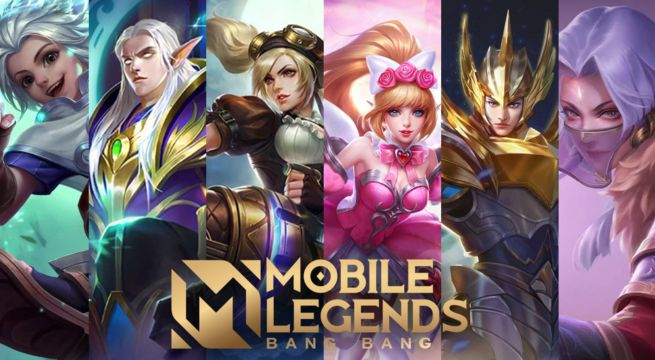

"Left 4 Dead" es un videojuego de acción y supervivencia en primera persona desarrollado por Valve Corporation. Ambientado en un mundo postapocalíptico infestado de zombis, el juego sigue a un grupo de cuatro supervivientes que luchan por sobrevivir y escapar de la ciudad plagada de infectados. Los jugadores pueden elegir entre varios personajes, cada uno con habilidades únicas, y cooperar para superar hordas de zombis, así como especiales infectados con habilidades peligrosas. "Left 4 Dead" es conocido por su jugabilidad cooperativa intensa, sus escenas de acción trepidantes y su atmósfera tensa y terrorífica
"Mobile Legends" es un popular juego de arena de batalla en línea multijugador (MOBA) desarrollado por Moonton. Los jugadores eligen entre una variedad de héroes con habilidades únicas y se enfrentan en equipos de cinco contra cinco en un mapa tridimensional. El objetivo principal es destruir la base enemiga mientras se defiende la propia. Durante las partidas, los jugadores deben coordinarse con sus compañeros de equipo, mejorar sus habilidades y derrotar a los héroes enemigos para ganar ventaja y llevar a cabo una estrategia efectiva. "Mobile Legends" es conocido por su jugabilidad dinámica, gráficos coloridos y competitividad en línea
"Minecraft" es un juego sandbox creado por Mojang Studios, donde los jugadores tienen la libertad de explorar, construir y crear en un mundo generado proceduralmente. Los jugadores pueden recolectar recursos, construir estructuras, crear herramientas y artículos, y enfrentarse a desafíos como monstruos y exploración de cuevas. El juego ofrece varios modos de juego, incluyendo el modo creativo donde los jugadores tienen acceso ilimitado a recursos y el modo supervivencia donde deben recolectar recursos y gestionar su salud y hambre. "Minecraft" es conocido por su libertad creativa, su estilo visual distintivo de bloques y su comunidad activa de jugadores que comparten creaciones y mods
VOLVER